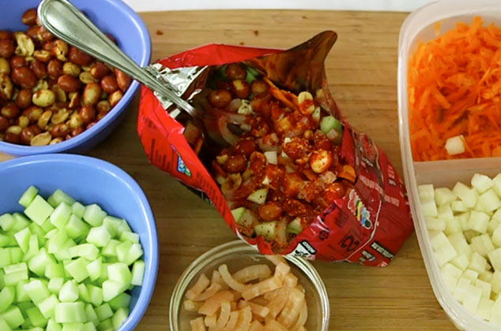

Dorilocos

Description
Dorilocos is a mexican antojito (snack). It consists on Doritos topped with a crazy mix of flavors and textures: cueritos (pickled pork rinds), japanese nuts, cucumber, jicama, tamarind, lime juice, chamoy, Tajin and Mexican hot sauce.
Ingredients
- A bag of Doritos
- Cueritos (pickled pork rinds)
- Cucumber
- Jicama
- Limes
- Japanese nuts
- Chamoy
- Carrot
- Hot sauce (salsa valentina or salsa botanera is a good choice)
Steps
- Lay your back of chips on a table label side up. Make one cut down the middle so it opens up like a bowl.
- Add the cucumbers, jicama, carrots, pork rinds and japanese nuts.
- Squeeze juice from the limes into the "bowl".
- Add as much chamoy and hot sauce as you like (adding a pinch of salt is never a bad option).
- Enjoy!